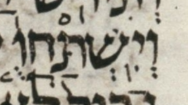

| bcv (link to tanach.us) | gn27:29 |
| MPK | וְיִֽשְׁתַּחֲוֻ֤ |
| qere | וְיִֽשְׁתַּחֲו֤וּ |
| at issue | וּ |
| at issue English | qubuts to shuruq |
| folio col line | 016A 2 4 |
The qubuts in the MPK becomes a shuruq dot in the qere.
Dotan notes a later version of this word in this verse, וְיִשְׁתַּחֲוּ֥וּ. Presumably he notes this later word for the unexpected dagesh in its penultimate vav. This later word is a normal (non-qere) word.